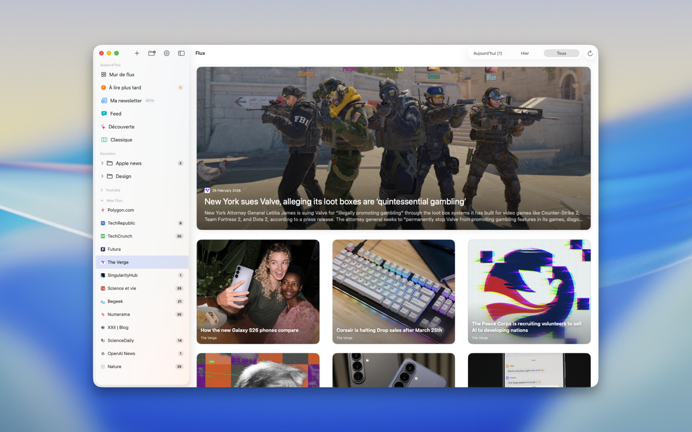
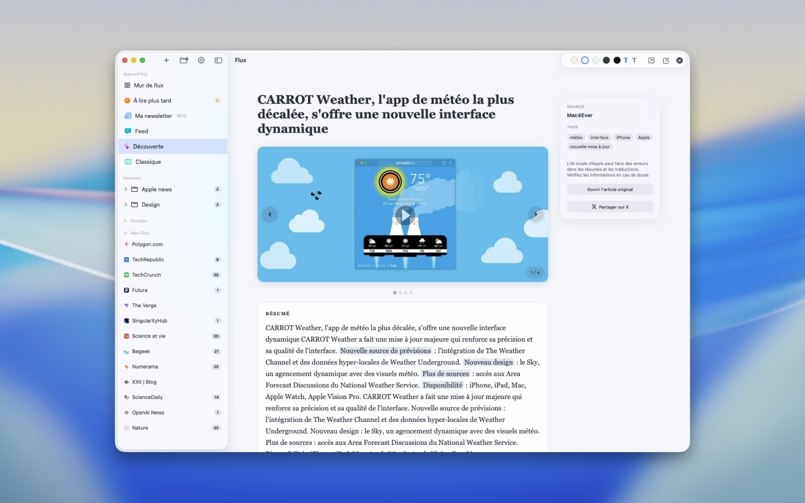

Lecture concentrée
Une interface claire qui met le contenu en avant, sans bruit.
Application macOS
Flux rassemble vos sources, simplifie la lecture et génère des résumés locaux pour aller à l’essentiel.
L’interface Flux sur macOS, en situation réelle.




Une interface claire qui met le contenu en avant, sans bruit.
Résumés et fonctions IA locales, pensées pour macOS.
Dossiers, favoris, découverte et newsletter au même endroit.